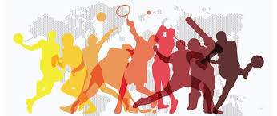

HER SORU İÇİN 20 SANİYENİZ VARDIR!!!
KRONOMETRE
Doğru Sayınız:
Soru5-]

Pep Guardiola,Jose Mourinho ve Jürgen Klopp hangi spor dalında
şampiyonluklar kazanmış isimlerdir?
a-)Atletizm
c-)Basketbol
d-)Futbol